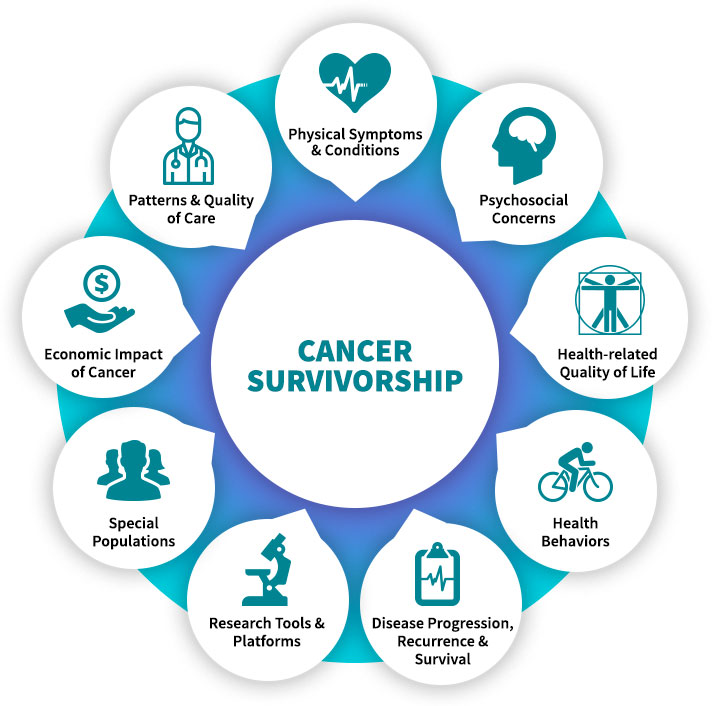

Expertise in Cancer Survivorship Research
Survivorship Program Contacts at NCI
The cancer survivorship topics below provide quick links to program directors who specialize in different areas of cancer survivorship.

Cancer Survivorship Topics
| Employment | |
|---|---|
| Janet de Moor, PhD, MPH | demoorjs@mail.nih.gov |
| Finances/financial hardship | |
| Janet de Moor, PhD, MPH | demoorjs@mail.nih.gov |
| Robin Vanderpool, DrPH | robin.vanderpool@nih.gov |
| GIS mapping | |
|---|---|
| Zaria Tatalovich, PhD | tatalovichzp@mail.nih.gov |
| Health information technology | |
| Gurvaneet Randhawa, MD, MPH | randhawags@mail.nih.gov |
| Health systems/organizations | |
| Janet de Moor, PhD, MPH | demoorjs@mail.nih.gov |
| Implementation Science | |
| Cynthia Vinson, MPA | cvinson@mail.nih.gov |
| Measures development | |
| Sandra A. Mitchell, PhD, CRNP | mitchlls@mail.nih.gov |
| Ashley Wilder Smith, PhD, MPH | smithas@mail.nih.gov |
| SEER-CAHPS | |
| Michelle Mollica, PhD, MPH, RN | mollicama@mail.nih.gov |
| SEER-MEDICARE | |
| Lindsey Enewold, PhD, MPH | enewoldlr@mail.nih.gov |
| Joan Warren, PhD | |
| SEER-MHOS | |
| Roxanne E. Jensen, PhD | roxanne.jensen@nih.gov |
| Survivor cohorts | |
| Joanne Elena, PhD, MPH | elenajw@mail.nih.gov |
| Use of technology for assessment/intervention | |
| Wen-Ying Chou, PhD, MPH | chouws@mail.nih.gov |
| Todd Horowitz, PhD | horowitzts@mail.nih.gov |
| Sandra A. Mitchell, PhD, CRNP | mitchlls@mail.nih.gov |
| Rick Moser, PhD | moserr@mail.nih.gov |
| Frank Perna, EdD, PhD | pernafm@mail.nih.gov |